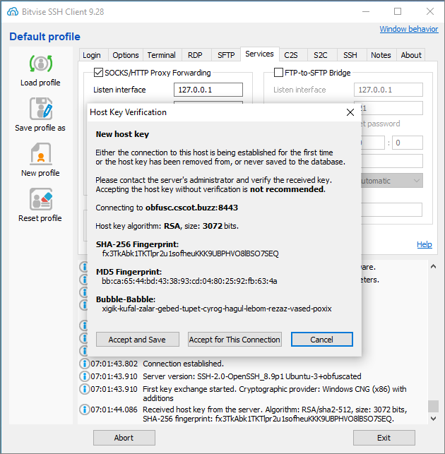
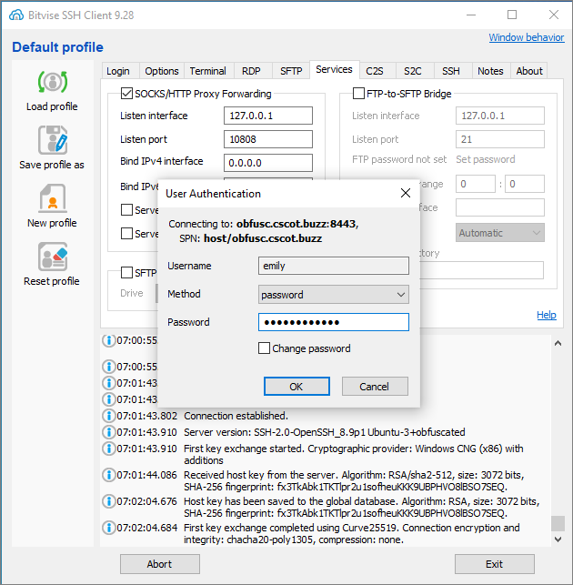

August 23, 2023
In this post you use obfuscated SSH to disguise your traffic to your proxy server.
References:
In our examples, the server runs Ubuntu 22.04 and you are logged in as root.
1. Choose ports for normal and obfuscated SSH. Our examples will be tcp/22 and tcp/8443 respectively. Open these ports for input in your server's firewall.
2. Add a user for obfuscated SSH. We will use the example of a user named emily:
adduser emily3. Generate a secret keyword for obfuscated SSH:
< /dev/urandom tr -dc a-z-0-9 | head -c${1:-16};echoOur example will be:
8d4r5b62wxbnllr14. Use the following commands to install the obfuscated SSH package from Launchpad. In our example the version we will use is the one associated with Ubuntu 22.04, which is codenamed jammy:
apt-add-repository ppa:zinglau/obfuscated-opensshapt updateapt install -y ssh5. When multiple APT repositories are enabled, a package can exist in several of them. To know which one should be installed, APT assigns priorities to packages. The default is 500. Pinning allows you to manually set higher or lower priorities. To implement APT pinning, create a file /etc/apt/preferences.d/openssh.pref with the following contents:
Package: * Pin: release o=LP-PPA-zinglau-obfuscated-openssh Pin-Priority: 600
6. After saving the file, verify successful pinning using:
apt-cache policy openssh-server7. Edit /etc/ssh/sshd_config. Change the file to specify your chosen ports and keyword:
Port 22 ObfuscatedPort 8443 ObfuscateKeyword 8d4r5b62wxbnllr1
8. If you intend to use password authentication, you must specify:
PasswordAuthentication yes
9. After saving the file, restart the SSH daemon:
systemctl restart sshd1. Download and install the Bitvise SSH client for Windows from https://www.bitvise.com/ssh-client-download.
2. On the Login tab:
8443 in our example8d4r5b62wxbnllr1emily in our example)3. On the Services tab:
127.0.0.1108084. Click the Log in button.
5. The first time you log in to a new server, the Host Key Verification box appears. Click Accept and Save.
6. The User Authentication box appears. Enter the user's password on the server.
7. If you have not already done so, install Mozilla Firefox, as this browser gives the finest control to the user.
8. From the Firefox hamburger menu, select Settings. On the General page, scroll down to where it says Network Settings, and click the Settings button.
127.0.0.1108089. After saving these settings, test your client configuration by visiting websites in Firefox.